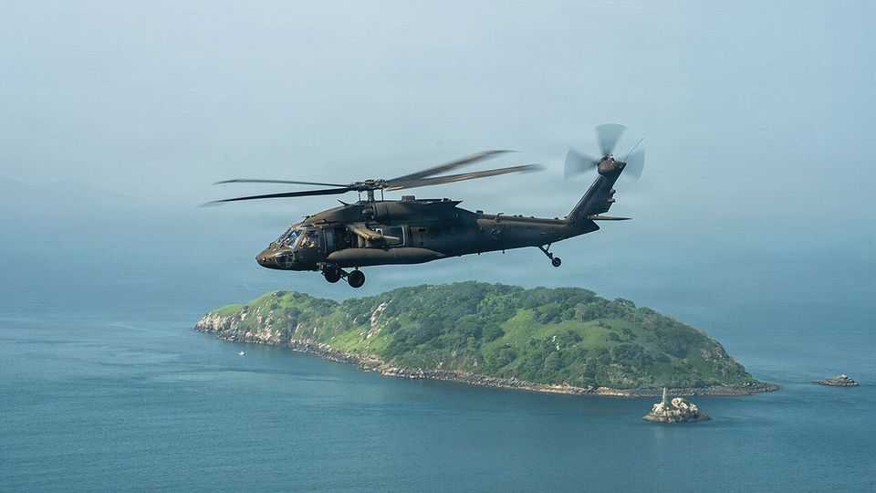
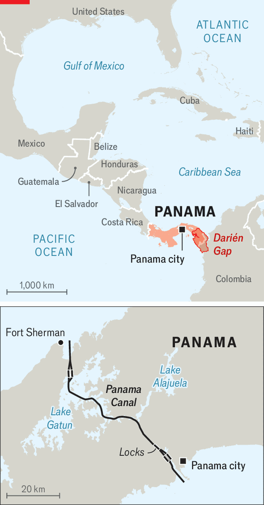
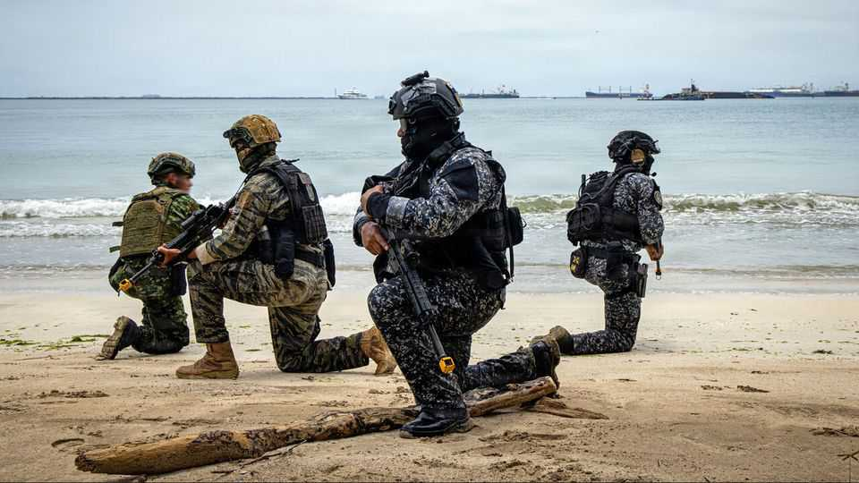

Donald Trump’s military expansion in Panama makes little sense
It is warping the neutrality which protects the country’s canal

Aug 27th 2026
SPEEDBOATS INTERCEPT a suspicious ship near the entrance to the Panama Canal. Troops board it and bundle the bad guys off. On the Caribbean coast, special forces launch an assault on a rebel base. On the outskirts of Panama city, the capital, Chinook and Black Hawk helicopters buzz overhead. From August 3rd to 13th, Panamanians witnessed a display of military prowess not seen in the country for almost two decades.
This was Panamax, a multinational military exercise led by the United States to practise fending off possible threats to the Panama Canal. Held roughly every two years since 2003, for the past 13 its simulation has been run from bases in Texas and Florida. This year it was done in Panama proper. Over 1,700 troops, mostly American but including soldiers from 17 (mostly Latin American) countries, engaged in “kinetic operations” across the country.

“I’ve no issue with tabletop exercises but you can’t replicate this,” said Pete Hegseth, the secretary of war, dressed in a sweat-soaked olive-green t-shirt. The canal is “a key piece of terrain. We’ve got more troops here in partnership with Panama than we’ve had in a very long time.”
The United States has renewed its interest in the western hemisphere since Donald Trump regained office. It has intervened militarily in Venezuela, ramped up economic pressure on Cuba, bullied Canada and menaced Greenland. And Mr Trump has repeatedly threatened to take control of the Panama Canal. For Southcom, the US Joint Command focused on Latin America, “ensuring unfettered US access to the Panama Canal is a top priority.” But this military expansionism does not sit comfortably with the treaties that govern the canal. And how effective will it be?
Mr Hegseth was speaking at Fort Sherman, one of three American-Panamanian training schools he announced on his previous trip, in April 2025. In the second half of the 20th century hundreds of thousands of troops undertook gruelling jungle-warfare training at Fort Sherman, many of them before being sent to Vietnam. “Green Hell” was closed in 1999, along with 13 other American military installations, as a condition of the 1977 Canal Neutrality Treaty, which banned foreign military installations. Panama’s government says the revived “Jungle School” is not a new foreign military base. But opposition politicians call it a “camouflaged invasion”.
Panama’s constitution bars the country from having an army, but since becoming president in 2024 José Raúl Mulino has beefed up Senafront, the border-control force, and Senan, the naval and air service. Last year Panama agreed to buy four Brazilian fighter planes. In April it received the first of an order of surveillance drones and interceptor boats from the United States. Together with port-scanning and cyber-security equipment, the United States has given technology worth more than $174m to the security forces, says Mr Mulino. In August his government launched a new joint command of Panamanian security forces, funded by canal revenue and dedicated to defending the waterway and its hydrographic basin.
Panamax was also a chance for Latin American members of the Americas Counter-Cartel Coalition, formerly known as the Shield of the Americas, to meet. Mr Hegseth said Colombia, along with Honduras and Guatemala, had agreed to allow joint American military operations in their territory “to bring the fight to the [designated terrorist organisations] on land”. (Guatemala denies it has agreed.)
With Colombia’s new president, Abelardo de la Espriella, promising an aggressive campaign against criminal groups, Panama is preparing to deal with the spillover. On August 15th Senafront sent more than 700 special forces to Panama’s southern border to try to stop gangsters entering through the heavily forested Darién Gap that separates the two countries. “The canal’s enemy is narco-trafficking, and no one else,” says Mr Mulino.
The United States disagrees. The Trump administration reckons China, not drug gangs, poses the most serious threat to the canal. It wants to drive Chinese activity away from all the critical infrastructure it can in Latin America. Last year it pushed Panama to remove Chinese operators from the ports at each end of the canal. Such “dual-use infrastructure” could be used for “intelligence gathering, cyber vulnerability, or logistical denial during global contingencies”, according to Southcom. Mr Hegseth views Panama as part of “Greater North America” and part of the “immediate security perimeter”.

“The Panama Canal is probably the most important infrastructure in the western hemisphere,” says Kevin Cabrera, America’s ambassador to Panama. “If you wanted to interrupt our commerce, the Panama Canal is the way to mess with that.” Military co-ordination is crucial to defending the waterway, he says.
But reviving Jungle School hardly tackles these concerns. American troops cannot stop spying or cyber-attacks by other states. Much bigger numbers of them would be needed to prevent drone attacks or sabotage by terrorists.
Instead, increased American meddling may increase risks to the canal. Panamanian schoolchildren are taught that their country’s neutrality is the canal’s best defence, while its openness to all vessels “in times of peace and in times of war” has boosted its role in world trade. Rodrigo Noriega, a local analyst, says Mr Trump’s mercantilism threatens this neutrality, with the result that the chances of the canal being targeted are growing. Mr Cabrera dismisses this. “State and non-state actors don’t care about the rule of law. They don’t care about treaties,” he says.
By contrast, Panama is seeking to bolster the Neutrality Treaty. Austria, Belgium, Brazil, Portugal and Switzerland have signed up. Japan, India and 12 others have been sounded out. Neutrality, Mr Noriega notes, protects Panama not just from physical attacks on its canal, but potentially from Mr Trump’s bullying too. ■